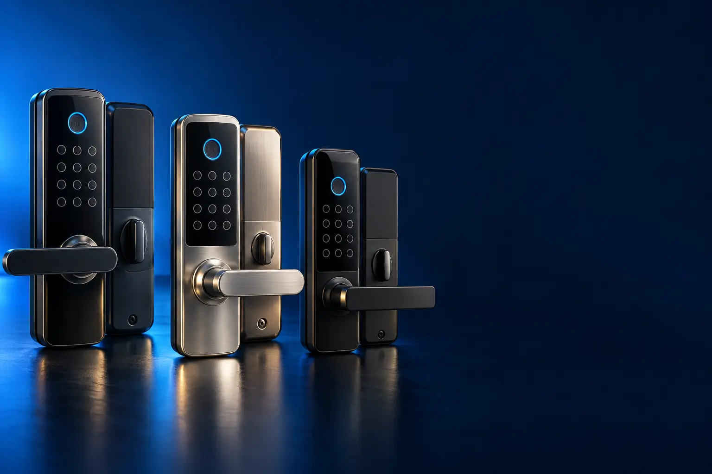

SENHA E TAG (SEM OBRA)
Melhor fechadura digital custo-benefício com senha e tag
De sobrepor, sem quebrar a porta: senha, tag e chave de emergência.

Melhor custo-benefício com senhaIntelbras FR 101
CURADORIA TECHAPROVADO · 2026
Fechadura digital troca a chave por senha, digital ou celular. Separamos 13 modelos em 3 perfis e dizemos para quem cada um vale a pena.

NOSSA LEITURA
Antes de escolher, meça a espessura da porta e veja se ela aceita fechadura de embutir. Depois decida como quer abrir: senha, dedo ou celular.
COMECE POR AQUI
SENHA E TAG (SEM OBRA)
De sobrepor, sem quebrar a porta: senha, tag e chave de emergência.
COM BIOMETRIA
Abre com o dedo: ninguém precisa decorar senha nem carregar tag.

WI-FI E APLICATIVO
Libere a porta pelo celular, de longe, e veja quem entrou e quando.

A FICHA, TRADUZIDA
01 - INSTALAÇÃO
A fechadura de sobrepor é parafusada por fora da porta, como um trinco grande. A de embutir entra dentro da porta, no lugar da fechadura comum, e costuma vir com maçaneta.
Sobrepor é mais barata e fácil de instalar, boa para apartamentos alugados. Embutir fica mais firme e bonita, mas exige recortar a porta e pede um profissional.
Meça a espessura da porta: cada modelo aceita uma faixa, como 25 a 50 mm. Portas de vidro e de alumínio pedem modelos específicos.
02 - ABERTURA
Senha é a forma mais simples. Tag é um chaveiro que você encosta. Biometria lê a impressão digital. O aplicativo abre pela internet, de onde você estiver.
Para casa com crianças e idosos, biometria e tag são mais fáceis que decorar senha. Para quem recebe diarista e hóspedes, as senhas temporárias do app ajudam muito.
Quase todas têm chave mecânica de emergência. Guarde a chave fora de casa, com alguém de confiança.
03 - WI-FI E APP
Com Wi-Fi, a fechadura conversa com o app: você abre a porta de longe, cria senhas que valem só num horário e vê quem entrou e quando.
Algumas funcionam com a Alexa ou o Google, mas por segurança pedem senha por voz para abrir. Outras precisam de um hub vendido à parte; confira no anúncio.
O Wi-Fi precisa chegar com sinal bom à porta. Se o roteador estiver longe, teste o sinal com o celular parado na porta antes de comprar.
04 - PILHAS
A maioria funciona com 4 pilhas AA, que duram de 10 meses a 1 ano. Antes de acabar, a fechadura avisa com bipe ou luz.
Se as pilhas acabarem, use a chave mecânica ou a entrada de emergência: muitos modelos aceitam uma bateria de 9V ou um cabo USB por fora para destravar.
Use pilhas alcalinas de boa marca: pilhas recarregáveis têm tensão menor e podem disparar o aviso de pilha fraca antes da hora.
05 - SEGURANÇA
Travamento automático tranca a porta sozinho depois que ela fecha. Senha protegida deixa digitar números aleatórios para esconder a senha de quem olha.
Alarme de tentativas bloqueia o teclado depois de várias senhas erradas. O histórico mostra cada entrada, nos modelos com app.
A fechadura digital não substitui uma porta resistente: em porta fraca, o ponto frágil continua sendo a madeira e a dobradiça.
A CURADORIA EM DETALHE
13 modelos da pesquisa
PERFIL · 5 MODELOS, DA ENTRADA AO TOP DE LINHA
As fechaduras de sobrepor são parafusadas por fora da porta, sem abrir buraco grande na madeira. São as mais baratas e as mais fáceis de instalar, abrem por senha ou tag e funcionam com pilhas.

SENHA E TAG · ALTERNATIVA 1 de 5
Outro caminho: abre por tag
Sobrepor · senha ou tag · trava dupla
Ver preço na AmazonPOR DENTRO DA ESCOLHA
Fechadura de sobrepor que abre por senha ou por tag (chaveiro de aproximação), com até 200 senhas, travamento automático, trava dupla e campainha sonora.
Custa parecido com a FR 101 e troca o foco: tag e muitas senhas, para casas com muita gente.
| Instalação | Sobrepor |
|---|---|
| Abertura | Senha ou tag |
| Senhas | Até 200 |
| Extras | Travamento automático, campainha |
Fonte: ficha e descrição do anúncio, conferidas em 02/11/2026. Dados informados pelo fabricante. Nota e número de avaliações são de compradores, não teste do TechAprovado.
SENHA E TAG · CUSTO-BENEFÍCIO 2 de 5
Melhor custo-benefício com senha
Sobrepor · senha · teclado touch luminoso
Ver preço na AmazonPOR DENTRO DA ESCOLHA
Fechadura de sobrepor para portas de 25 a 50 mm, com teclado touch de 12 teclas luminoso e até 4 senhas de 4 a 12 dígitos. Funciona com 4 pilhas e tem entrada para bateria 9V de emergência.
É a fechadura digital mais avaliada da loja: mais de 14 mil avaliações e nota 4,9.
| Instalação | Sobrepor |
|---|---|
| Abertura | Senha |
| Porta | 25 a 50 mm |
| Energia | 4 pilhas + 9V de emergência |
Fonte: ficha e descrição do anúncio, conferidas em 02/11/2026. Dados informados pelo fabricante. Nota e número de avaliações são de compradores, não teste do TechAprovado.

SENHA E TAG · INTERMEDIÁRIO 3 de 5
Sobrepor · touch screen · pilhas por até 10 meses
Ver preço na AmazonPOR DENTRO DA ESCOLHA
Fechadura de sobrepor touch screen para portas de 25 a 50 mm, com 4 pilhas AA que duram até 10 meses e aviso de pilha fraca com até 1 semana de antecedência.
Um degrau acima da FR 101 em acabamento e autonomia, com nota 4,9 em mais de 2 mil avaliações.
| Instalação | Sobrepor |
|---|---|
| Porta | 25 a 50 mm |
| Pilhas | Até 10 meses |
| Aviso | Pilha fraca 1 semana antes |
Fonte: ficha e descrição do anúncio, conferidas em 02/11/2026. Dados informados pelo fabricante. Nota e número de avaliações são de compradores, não teste do TechAprovado.

SENHA E TAG · AVANÇADO 4 de 5
Sobrepor · 9 senhas · senha protegida
Ver preço na AmazonPOR DENTRO DA ESCOLHA
Até 9 senhas (1 de administrador, 4 de visitantes e outras fixas), com senhas provisórias para prestadores e a função senha protegida, que deixa digitar números aleatórios antes e depois da senha certa. Pilhas AA com cerca de 1 ano de duração.
A senha protegida impede que alguém descubra a senha olhando o teclado ou as marcas de dedo.
| Instalação | Sobrepor |
|---|---|
| Senhas | Até 9, com provisórias |
| Segurança | Senha protegida |
| Pilhas | Cerca de 1 ano |
Fonte: ficha e descrição do anúncio, conferidas em 02/11/2026. Dados informados pelo fabricante. Nota e número de avaliações são de compradores, não teste do TechAprovado.

SENHA E TAG · TOP DE LINHA 5 de 5
Top de linha com senha
Sobrepor · guia de voz · tranca automática
Ver preço na AmazonPOR DENTRO DA ESCOLHA
Fechadura Yale que destranca por senha, com menu guiado por voz em português, tranca manual ou automática e trinco reversível para portas que abrem para a direita ou a esquerda.
A Yale é uma das marcas mais tradicionais em fechaduras; o guia de voz facilita a configuração sem manual.
| Instalação | Sobrepor |
|---|---|
| Abertura | Senha |
| Configuração | Guia de voz em português |
| Tranca | Manual ou automática |
Fonte: ficha e descrição do anúncio, conferidas em 02/11/2026. Dados informados pelo fabricante. Nota e número de avaliações são de compradores, não teste do TechAprovado.
PERFIL · 4 MODELOS, DA ENTRADA AO TOP DE LINHA
Com biometria, a fechadura reconhece a impressão digital de cada morador. É o jeito mais rápido de entrar e o mais prático para crianças e idosos. Os modelos mais caros são de embutir e dispensam a maçaneta.
BIOMETRIA · CUSTO-BENEFÍCIO 1 de 4
Melhor custo-benefício com biometria
Biometria · senha · tag · chave mecânica
Ver preço na AmazonPOR DENTRO DA ESCOLHA
Leitor de impressão digital, senha, tag e chave mecânica de emergência, em corpo de liga de alumínio com fecho de aço inox.
Quatro formas de abrir por um preço de fechadura de senha.
| Abertura | Biometria, senha, tag e chave |
|---|---|
| Corpo | Liga de alumínio, fecho inox |
| Wi-Fi | Não |
Fonte: ficha e descrição do anúncio, conferidas em 02/11/2026. Dados informados pelo fabricante. Nota e número de avaliações são de compradores, não teste do TechAprovado.

BIOMETRIA · INTERMEDIÁRIO 2 de 4
Embutir · biometria e senha · senhas temporárias
Ver preço na AmazonPOR DENTRO DA ESCOLHA
Fechadura de embutir com leitor biométrico e senha numérica, que permite compartilhar senhas temporárias com familiares e amigos.
Nota 4,8 em mais de mil avaliações. O degrau sobre a Delta é a instalação embutida, mais firme e discreta.
| Instalação | Embutir |
|---|---|
| Abertura | Biometria e senha |
| Extras | Senhas temporárias |
Fonte: ficha e descrição do anúncio, conferidas em 02/11/2026. Dados informados pelo fabricante. Nota e número de avaliações são de compradores, não teste do TechAprovado.

BIOMETRIA · AVANÇADO 3 de 4
Embutir · sem maçaneta · biometria, tag, senha e app
Ver preço na AmazonPOR DENTRO DA ESCOLHA
Até 100 biometrias, 100 tags e 15 senhas, travamento automático e gerenciamento pelo app Mibo Smart, com relatórios de entradas e acessos temporários.
A capacidade de cadastros é a maior da lista abaixo do topo, e o app permite liberar a porta de longe.
| Instalação | Embutir, sem maçaneta |
|---|---|
| Cadastros | 100 biometrias, 100 tags, 15 senhas |
| App | Mibo Smart |
| Tranca | Automática |
Fonte: ficha e descrição do anúncio, conferidas em 02/11/2026. Dados informados pelo fabricante. Nota e número de avaliações são de compradores, não teste do TechAprovado.

BIOMETRIA · TOP DE LINHA 4 de 4
Top de linha com biometria
Push & pull · biometria, senha ou tag · LED de status
Ver preço na AmazonPOR DENTRO DA ESCOLHA
Design push & pull, que dispensa a maçaneta: a porta abre e fecha empurrando ou puxando. Até 100 digitais e 100 tags e indicador LED que mostra se a porta está trancada.
O push & pull é o diferencial: a mão que encosta no puxador já abre a porta.
| Formato | Push & pull, sem maçaneta |
|---|---|
| Abertura | Biometria, senha ou tag |
| Cadastros | 100 digitais e 100 tags |
| Status | LED |
Fonte: ficha e descrição do anúncio, conferidas em 02/11/2026. Dados informados pelo fabricante. Nota e número de avaliações são de compradores, não teste do TechAprovado.
PERFIL · 4 MODELOS, DA ENTRADA AO TOP DE LINHA
As fechaduras Wi-Fi conectam ao celular: você abre a porta de longe, cria senhas temporárias para a diarista ou o hóspede e recebe o histórico de entradas. Algumas também atendem pela Alexa.
WI-FI E APP · CUSTO-BENEFÍCIO 1 de 4
Melhor custo-benefício com Wi-Fi
Wi-Fi · app · biometria, senha e tag
Ver preço na AmazonPOR DENTRO DA ESCOLHA
A versão Wi-Fi da Delta: biometria, senha, tag, chave mecânica e abertura pelo aplicativo.
É a fechadura com app mais avaliada da faixa de entrada: mais de mil avaliações, nota 4,5.
| Abertura | Biometria, senha, tag, chave e app |
|---|---|
| Wi-Fi | Sim |
Fonte: ficha e descrição do anúncio, conferidas em 02/11/2026. Dados informados pelo fabricante. Nota e número de avaliações são de compradores, não teste do TechAprovado.

WI-FI E APP · ALTERNATIVA 2 de 4
Outro caminho: de embutir
Embutir com maçaneta · Wi-Fi · 5 formas de abrir
Ver preço na AmazonPOR DENTRO DA ESCOLHA
Fechadura de embutir com maçaneta que abre por senha, biometria, tag (2 unidades na caixa), chave e aplicativo, com até 99 senhas permanentes, temporárias ou dinâmicas e AutoLock.
As senhas temporárias e dinâmicas são úteis para hóspedes de aluguel por temporada.
| Instalação | Embutir, com maçaneta |
|---|---|
| Abertura | Senha, biometria, tag, chave, app |
| Senhas | Até 99 |
| Tranca | AutoLock |
Fonte: ficha e descrição do anúncio, conferidas em 02/11/2026. Dados informados pelo fabricante. Nota e número de avaliações são de compradores, não teste do TechAprovado.

WI-FI E APP · INTERMEDIÁRIO 3 de 4
Wi-Fi · biometria · Alexa · pilhas por até 1 ano
Ver preço na AmazonPOR DENTRO DA ESCOLHA
Seis formas de abrir: biometria (até 100 digitais, em menos de 0,5 s), senha (até 200, permanentes, temporárias ou agendadas), app Tapo, Bluetooth, comando de voz e chave. O app mostra o status da porta, alertas e histórico.
As senhas agendadas e o histórico no app são o ponto forte para quem recebe prestadores.
| Abertura | Biometria, senha, app, Bluetooth, voz, chave |
|---|---|
| Digitais | Até 100 |
| Senhas | Até 200 |
| Bateria | Até 1 ano |
Fonte: ficha e descrição do anúncio, conferidas em 02/11/2026. Dados informados pelo fabricante. Nota e número de avaliações são de compradores, não teste do TechAprovado.

WI-FI E APP · TOP DE LINHA 4 de 4
Top de linha com Wi-Fi
Embutir com maçaneta · biometria na maçaneta · Alexa
Ver preço na AmazonPOR DENTRO DA ESCOLHA
Fechadura de embutir para portas de 30 a 60 mm, com biometria de alta precisão na própria maçaneta reversível, compatível com Alexa e alimentada por 4 pilhas AA (cerca de 10 meses).
A biometria na maçaneta deixa a entrada natural: segurar a maçaneta já destrava.
| Instalação | Embutir, porta de 30 a 60 mm |
|---|---|
| Biometria | Na maçaneta |
| Integração | Alexa |
| Pilhas | Cerca de 10 meses |
Fonte: ficha e descrição do anúncio, conferidas em 02/11/2026. Dados informados pelo fabricante. Nota e número de avaliações são de compradores, não teste do TechAprovado.
Nenhum modelo encontrado. Tente outro termo ou volte para Todos.
LADO A LADO
| Modelo | Perfil | Posição | Instalação | Destaque | Nota (avaliações) |
|---|---|---|---|---|---|
| Elsys Pop DS1100V | Senha e tag | Alternativa | Sobrepor | Sobrepor · senha ou tag · trava dupla | 4,6 (910) |
| Intelbras FR 101 | Senha e tag | Custo-benefício | Sobrepor | Sobrepor · senha · teclado touch luminoso | 4,9 (14,3 mil) |
| Intelbras FR 201 | Senha e tag | Intermediário | Sobrepor | Sobrepor · touch screen · pilhas por até 10 meses | 4,9 (2,2 mil) |
| Intelbras FD 2000 | Senha e tag | Avançado | Sobrepor | Sobrepor · 9 senhas · senha protegida | 4,9 (141) |
| Yale YRD 256 | Senha e tag | Top de linha | Sobrepor | Sobrepor · guia de voz · tranca automática | 4,6 (171) |
| Kuanttum Delta | Biometria | Custo-benefício | Biometria, senha, tag e chave | Biometria · senha · tag · chave mecânica | 4,4 (457) |
| Elsys ESF-DE2000B | Biometria | Intermediário | Embutir | Embutir · biometria e senha · senhas temporárias | 4,8 (1,2 mil) |
| Intelbras MFR 7001 | Biometria | Avançado | Embutir, sem maçaneta | Embutir · sem maçaneta · biometria, tag, senha e app | 4,6 (267) |
| Intelbras FR 630 | Biometria | Top de linha | Biometria, senha ou tag | Push & pull · biometria, senha ou tag · LED de status | 4,6 (130) |
| Kuanttum Delta Pro | Wi-Fi e app | Custo-benefício | Biometria, senha, tag, chave e app | Wi-Fi · app · biometria, senha e tag | 4,5 (1,1 mil) |
| Positivo Casa Inteligente | Wi-Fi e app | Alternativa | Embutir, com maçaneta | Embutir com maçaneta · Wi-Fi · 5 formas de abrir | 4,6 (765) |
| TP-Link Tapo DL110 | Wi-Fi e app | Intermediário | Biometria, senha, app, Bluetooth, voz, chave | Wi-Fi · biometria · Alexa · pilhas por até 1 ano | 4,6 (832) |
| Intelbras IFR 7000 | Wi-Fi e app | Top de linha | Embutir, porta de 30 a 60 mm | Embutir com maçaneta · biometria na maçaneta · Alexa | 4,7 (221) |
CONSIDERAÇÕES FINAIS
Fechaduras de reconhecimento facial e com câmera ficaram fora desta lista: as que encontramos tinham poucas avaliações ou estoque baixo na data da conferência.
A Intelbras FR 101 para senha, a Kuanttum Delta para biometria e a Kuanttum Delta Pro para Wi-Fi.
Sim, desde que instalada numa porta resistente. Recursos como travamento automático e senha protegida ajudam no dia a dia.
A fechadura avisa antes. Se acabar, use a chave mecânica ou a entrada de emergência (bateria 9V ou USB, conforme o modelo).
Sobrepor é mais barata e não exige obra. Embutir fica mais firme e bonita, mas precisa recortar a porta.
Alguns modelos, como a Tapo DL110 e a Intelbras IFR 7000. Outros precisam de um hub vendido à parte.
Porque ele muda várias vezes por dia. O botão leva ao valor atualizado na loja.
TRANSPARÊNCIA EDITORIAL
Separamos os modelos pela forma de abrir e pela instalação, e montamos uma escada de preço em cada perfil. Cada modelo precisa responder com clareza "para quem ele é o certo".
Em cada perfil há modelos em faixas de preço diferentes, e cada degrau precisa entregar algo que o anterior não entrega. Dois modelos com a mesma proposta não entram juntos.
Ficha, nota e número de avaliações foram conferidos nos anúncios das lojas em 02/11/2026. As avaliações são de compradores, não teste nosso.
Os links de compra desta página são de afiliado: se você comprar por eles, o TechAprovado pode ganhar uma comissão, sem custo adicional para você. Isso não muda a ordem nem a escolha dos produtos.
📲 GUIAS E DICAS NO SEU FEED
Dicas práticas antes de comprar, em carrosséis e vídeos curtos, sempre com link para o guia completo.